Web apps
18 tools that run entirely in your browser – your files stay on your computer. The programmers and transfer tools talk to hardware over WebUSB or Web Serial, so use Chrome, Edge or Opera on a desktop computer.
C64 tools
An emulator, disk images, real floppies and tapes, cartridges.
- C64 EmulatorA complete C64 in the browser: PRG, D64, G64, T64, TAP and CRT with 1541 drive, datasette, joystick, gamepad and sound.
- C64 Disk ViewerTurns a .d64 disk image into a picture of the floppy, showing every track, sector and bit.
- C64 Disk EditorAdds and removes files on a disk image, arranges the directory, defragments and saves it.
- C64 Disk TransferReads, writes and formats real 1541 floppies with a DiskBuddy64, DiskMaster64 or DumpMaster64.
- C64 Tape TransferReads and writes cassettes with a TapeBuddy64, TapeDump64 or DumpMaster64 and cleans up TAP files.
- C64 Cartridge BuilderPuts C64 programs on a Magic Desk cartridge with a menu, as BIN for the EPROM or CRT for emulators.
Programming tools
Flash microcontrollers and memory chips straight from the browser.
- WCH RISC-V ProgrammerCH32V, CH32X, CH32L, CH5xx and more with a WCH-LinkE: flash, erase, unlock, unbrick.
- WCH USB ProgrammerCH55x, CH5xx, CH32F/V/X/L and CH64x over USB with their built-in bootloader.
- PUYA ISP ProgrammerPY32 microcontrollers through a USB-to-serial converter and their UART bootloader.
- STM32 ISP ProgrammerSTM32 C0 to WL through a USB-to-serial converter and their UART bootloader.
- SWD ProgrammerSTM32, PY32 and ATSAMD over SWD with a DAP-Link, ST-Link or J-Link.
- AVR Serial UPDI ProgrammerAll UPDI AVRs (tinyAVR 0/1/2, megaAVR 0, AVR Dx/Ex) through a USB-to-serial converter, fuses included.
- AVR ISP ProgrammerClassic ATtiny and ATmega with a USBasp or USBtinyISP, fuses and lock bits explained.
- XGecu Memory ProgrammerEPROMs, EEPROMs and flash with a TL866A/CS/II+ or T48: over 22,000 chips.
- Game Console FlasherPick a game for the CH32V003 Mini Game Console, preview it and flash it with a WCH-LinkE.
Electronics & PCB tools
Small helpers for the workbench.
- Gerber ViewerShows both sides of a PCB from its Gerber and drill files in the solder mask color of your choice.
- Serial TerminalTalks to a USB-to-serial converter or USB CDC device: text or hex, DTR/RTS, timestamps.
- MT3608 SEPIC CalculatorFinds the resistor values for the output voltage of the MT3608 SEPIC converter.
Browser games
Homages to Amiga, C64, arcade and PC classics, written from scratch with code-drawn graphics and synthesized sound. Play with keyboard, mouse or gamepad; press F for fullscreen.
- IronfallRun-and-gun platformer in the spirit of Turrican: ten stages, five bosses, lightning beam and gyroscope.
- X-AbyssUnderwater shoot'em-up in the spirit of X-Out, with a shipyard between eight stages.
- PrimordiaVertical shoot'em-up in the spirit of Xenon 2 through eight ages of evolution.
- Sunset HighwayPseudo-3D road racer in the spirit of Out Run: pick your route through 15 stages.
- DreamhopCute jump-and-run in the spirit of The Great Giana Sisters: twelve levels in four dream worlds.
- Deep DinerEat-and-grow underwater game in the spirit of Feeding Frenzy, with five worlds.
- Bubble PuffBubble-blowing platformer in the spirit of Bubble Bobble: 16 rounds and a final boss.
- Alien ArmadaAlien-invasion shooter in the spirit of Space Invaders with motherships and power-ups.
- Garden SiegeTower-defense garden game in the spirit of Plants vs. Zombies: 48 plants, 50 levels, mini-games, puzzles and survival.
- Feather FrenzyGrouse-shooting arcade game in the spirit of Moorhuhn: eight scrolling landscapes, hidden bonus targets and high scores.
Hardware projects
174 open hardware designs on GitHub, each with schematic, Gerber files, bill of materials and firmware. Search by name, function or chip.
174 projects
Commodore C64 20
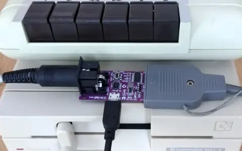
DumpMaster64ATtiny1614Connects 1541 floppy drives and C2N/1530 Datasettes to your PC via USB.C64-Collection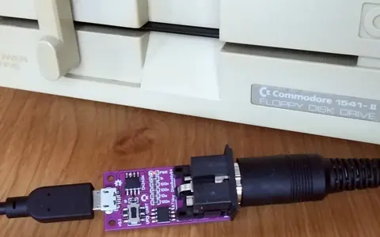
DiskBuddy64ATtiny412Minimal USB adapter with fast loader to read and write disks on a 1541 drive.C64-Collection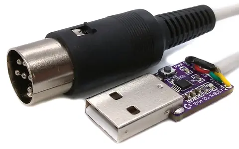
DiskMaster64CH552ESmall USB adapter with fast loader for the 1541 floppy disk drive.C64-Collection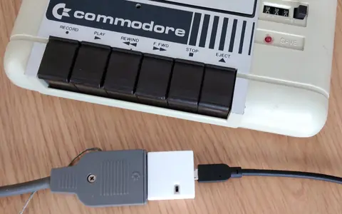
TapeBuddy64ATtiny814Reads and writes C64 tapes on a Datasette via USB.C64-Collection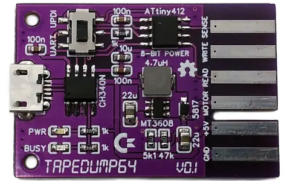
TapeDump64ATtiny412Dumps your old C64 tapes as TAP files via USB.C64-Collection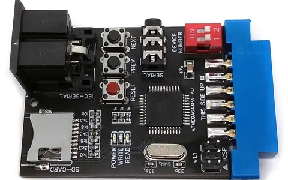
SD2IEC LPATmega644PSD card floppy drive emulator with cassette port plug.C64-Collection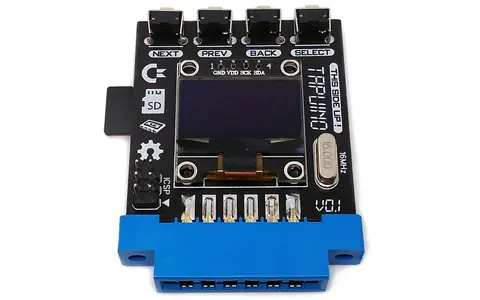
TapuinoATmega328PDatasette emulator: put TAP files on an SD card and load them on your C64.C64-Collection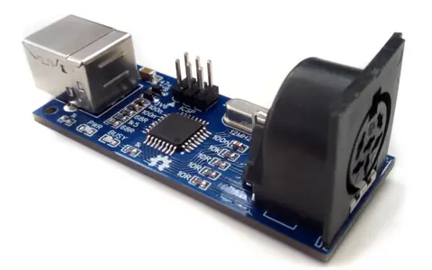
xu1541ATmega8Connects CBM floppy drives (1541, 1571, 1581 …) to USB-equipped PCs.C64-Collection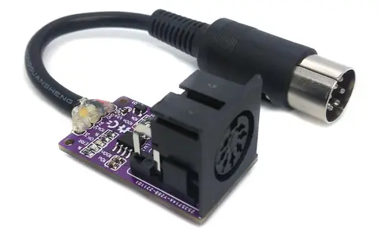
C64 Power GuardProtects your C64 from overvoltage of an aging power brick.C64-Collection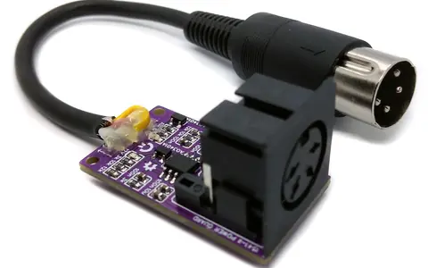
1541-II Power GuardProtects 1541-II/1571-II/1581 drives from overvoltage of an aging power brick.C64-Collection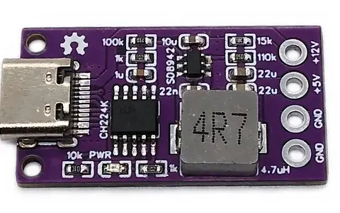
USB-C to 1541-II Power AdapterCH224KPowers 1541-II/1571-II/1581 drives from a USB-C PD power supply.C64-Collection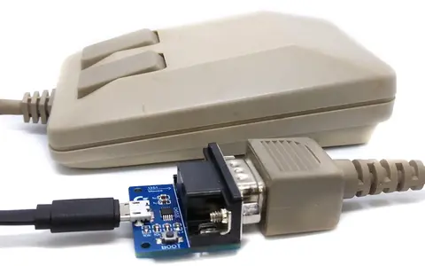
1351 Mouse to USB AdapterCH552EUse a Commodore 1351 proportional mouse on a modern PC.C64-Collection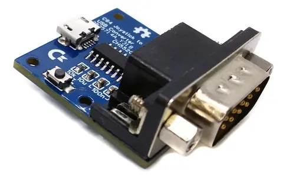
C64 Joystick to USB AdapterCH552GUse your 9-pin joysticks, paddles and mice on a modern PC.C64-Collection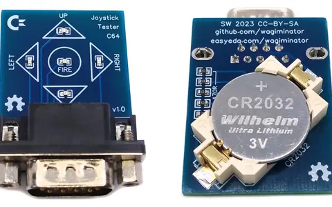
C64 Joystick TesterCheck your old 9-pin joysticks without switching on the C64.C64-Collection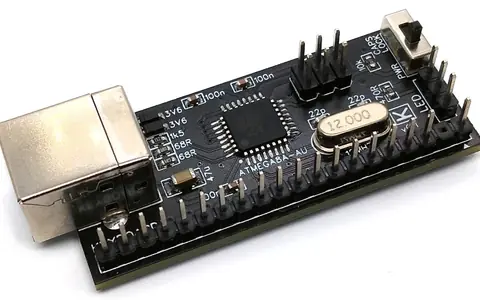
C64 Keyboard to USB AdapterATmega8Use the original C64 keyboard with your favourite emulator.C64-Collection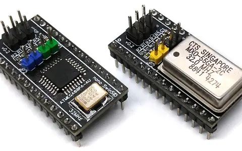
SwinSID nanoATmega88Replacement board for the SID sound chip of the C64.C64-Collection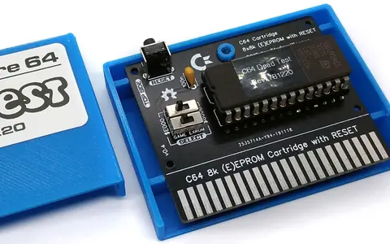
C64 8k CartridgeSimple 8k cartridge for the C64.C64-Collection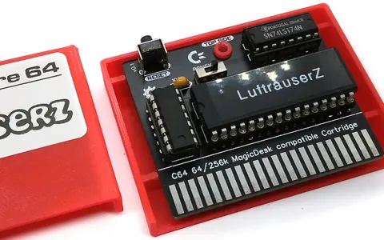
C64 64k/256k CartridgeMagic Desk compatible cartridge for multiple PRG files.C64-Collection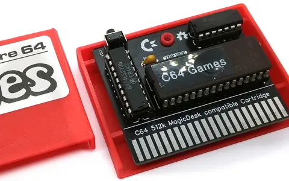
C64 512k CartridgeMagic Desk compatible 512k cartridge for even more PRG files.C64-Collection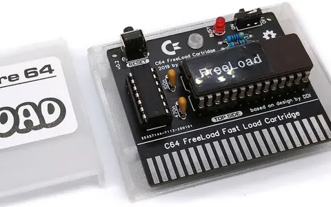
C64 FreeLoad CartridgeEpyx Fastload clone with reset button, activity LED and disable switch.C64-Collection
Development Boards 33
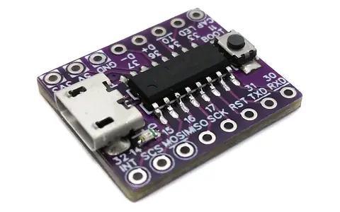
CH55xG Development BoardCH552G8051 USB microcontroller board for the CH551G/CH552G/CH554G with Arduino IDE support.Development-Boards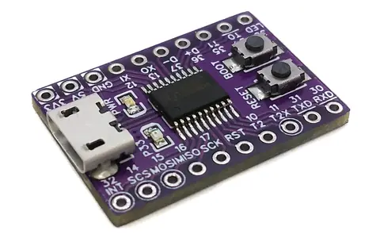
CH55xT Development BoardCH552TBoard for the CH552T, CH554T, CH558T and CH559T 8051 USB microcontrollers.Development-Boards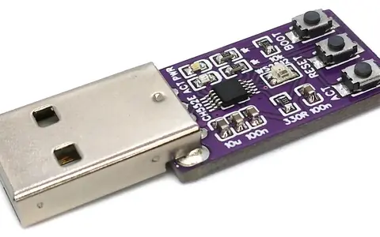
CH55xE Development StickCH552EUSB stick with LED, NeoPixel, push button and touch key for the CH552E/CH554E.Development-Boards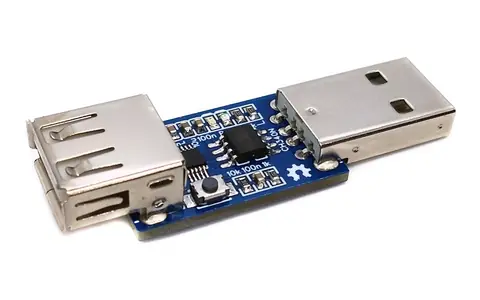
CH554E USB Host Development StickCH554EExplore the USB host mode of the CH554E with a USB-A socket for keyboards, mice and more.Development-Boards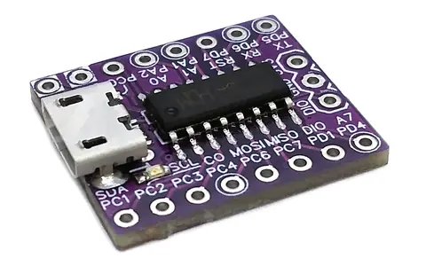
CH32V003 A4M6 Development BoardCH32V003A4M6Breadboard-friendly board for the 10-cent CH32V003A4M6 RISC-V microcontroller.Development-Boards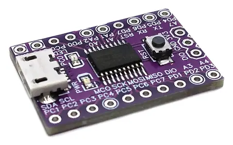
CH32V003 F4P6 Development BoardCH32V003F4P6Breadboard-friendly board for the 10-cent CH32V003F4P6 RISC-V microcontroller.Development-Boards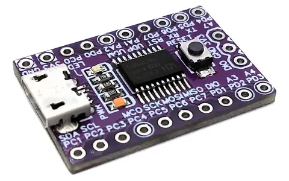
CH32V003 F4P6 Development Board V-USBCH32V003F4P6CH32V003 board with a USB socket for software USB (rv003usb).Development-Boards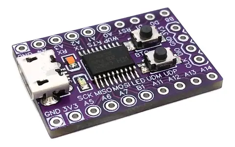
CH32V203 F6P6 Development BoardCH32V203F6P6Board for the CH32V203 RISC-V microcontroller with native USB and Arduino IDE support.Development-Boards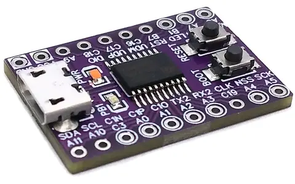
CH32X033 F8P6 Development BoardCH32X033F8P6Board for the 20-cent CH32X033 RISC-V microcontroller with native USB.Development-Boards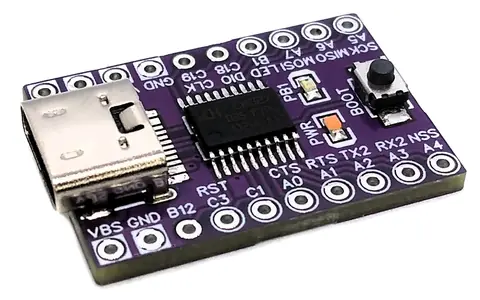
CH32X035 F7P6 Development BoardCH32X035F7P6Board for the CH32X035 RISC-V microcontroller with native USB and USB Power Delivery.Development-Boards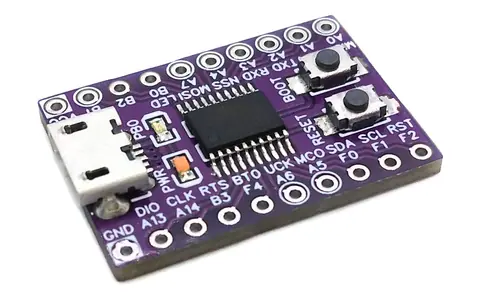
PY32F002A Development BoardPY32F002AF15PBoard for the 10-cent PUYA Cortex-M0+ with USB-to-serial adapter for the bootloader.Development-Boards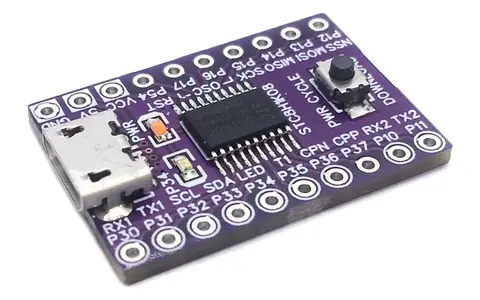
STC8H1K08 Development BoardSTC8H1K08Board for the 20-cent STC8H 8051 microcontroller with USB-to-serial adapter.Development-Boards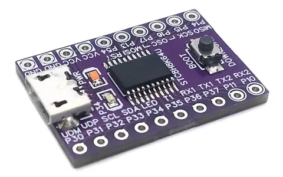
STC8H8K64U Development BoardSTC8H8K64UBoard for the STC8H8K64U 8051 microcontroller with native USB and USB bootloader.Development-Boards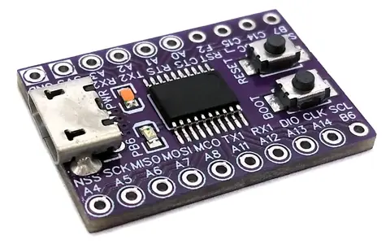
STM32C011 Development BoardSTM32C011F4P6Board for the STM32C0 Cortex-M0+ with USB-to-serial adapter for the bootloader.Development-Boards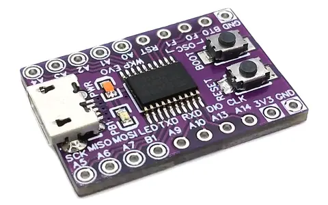
STM32F030 Development BoardSTM32F030F4P6Board for the STM32F030 Cortex-M0 (also fits STM32L010) with USB-to-serial adapter.Development-Boards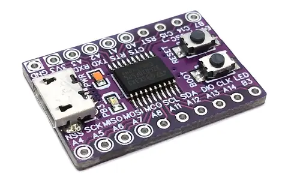
STM32G030 Development BoardSTM32G030F6P6Board for the STM32G030 Cortex-M0+ with USB-to-serial adapter for the bootloader.Development-Boards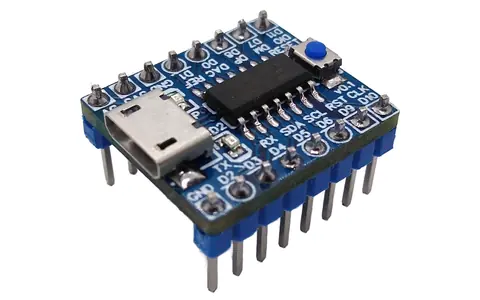
ATSAMD11C Development BoardATSAMD11C14ATiny board for the SAMD11C (SO14) Cortex-M0+ with native USB and bootloader.Development-Boards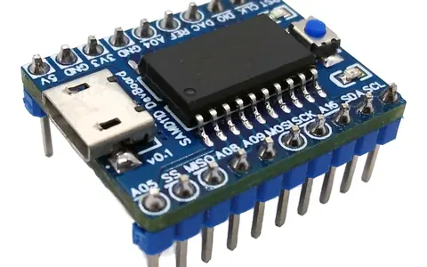
ATSAMD11D Development BoardATSAMD11D14ABoard for the SAMD11D (SO20) Cortex-M0+ with native USB and bootloader.Development-Boards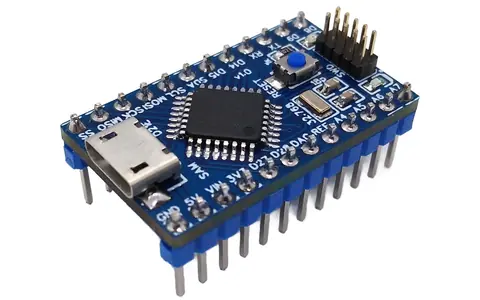
ATSAMD21E Development BoardATSAMD21EBoard for the SAMD21E Cortex-M0+ with native USB and 32.768 kHz crystal.Development-Boards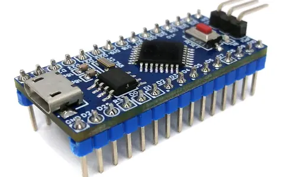
ATmega4808 Development BoardATmega4808megaAVR 0-series board with USB-to-serial converter and RTC crystal; also fits AVR DA/DB.Development-Boards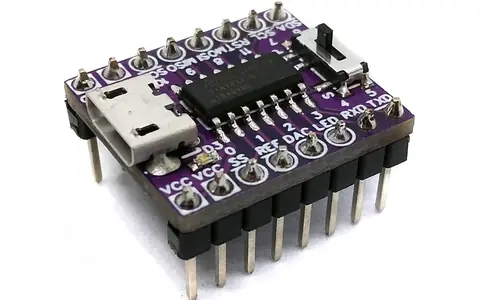
ATtiny814 Development BoardATtiny814Board for 14-pin tinyAVRs with USB-to-serial converter that doubles as SerialUPDI programmer.Development-Boards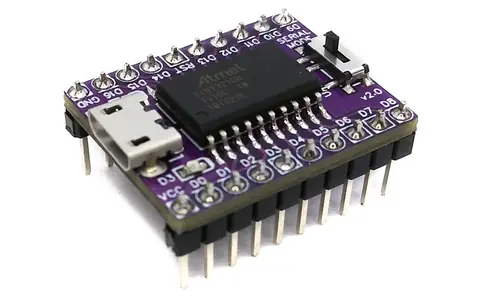
ATtiny3216 Development BoardATtiny3216Board for 20-pin tinyAVRs with USB-to-serial converter that doubles as SerialUPDI programmer.Development-Boards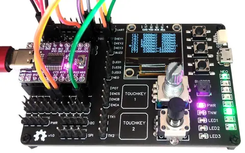
Development Board AdapterPlug in a development board and wire up components with jumper cables.Development-Boards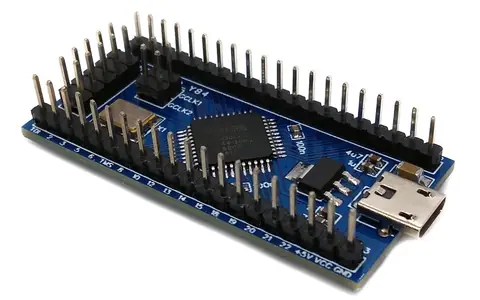
MAX3000A CPLD Development BoardEPM3032A / EPM3064ABoard for the Altera MAX 3000A CPLDs with clock oscillator and JTAG header.Development-Boards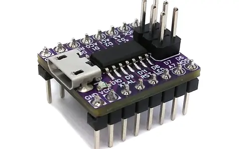
ATtiny84 Development Board v2ATtiny84Board for the ATtiny24/44/84 with ICSP header and Arduino IDE support.AVR-Development-Boards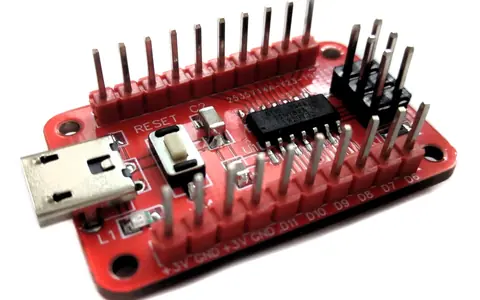
ATtiny84 Development Board v1ATtiny84First version of the development board for ATtiny24/44/84.AVR-Development-Boards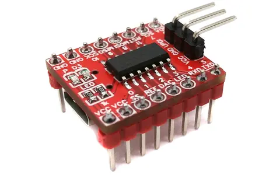
ATtiny814 Development Board v1ATtiny814First version of the tinyAVR 14-pin board with USB-to-serial converter.AVR-Development-Boards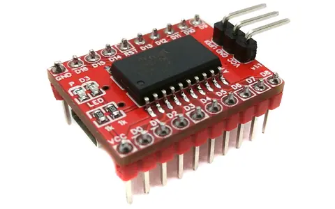
ATtiny3216 Development Board v1ATtiny3216First version of the tinyAVR 20-pin board with USB-to-serial converter.AVR-Development-Boards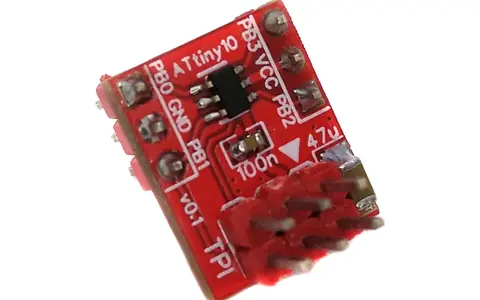
ATtiny10 Development BoardATtiny10Simple breakout board for the tiny 6-pin ATtiny10.AVR-Development-Boards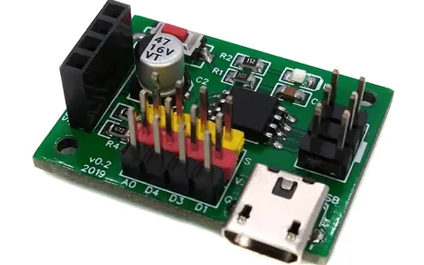
ATtiny85 Development BoardATtiny85Development board for the ATtiny13/25/45/85.AVR-Development-Boards- ATtiny85 Development Board (DIP)ATtiny85Development board for the DIP versions of the ATtiny13/25/45/85.AVR-Development-Boards
- ATtiny85 Clock Development BoardATtiny85ATtiny85 board with DS1307 real-time clock and coin cell holder.AVR-Development-Boards
- ATmega Development Board (DIP)ATmega328PSmall development board for the DIP versions of the ATmega8/168/328.AVR-Development-Boards
Programmers & Debuggers 26
- SWD Programmer StickATSAMD11C14ACMSIS-DAP debug probe based on Free-DAP for SAM and other ARM microcontrollers.SAMD-Development-Boards
- SAMD Programmer AdapterFlash SAMD chips in TQFP-32 or SOIC-14 packages before soldering.SAMD-Development-Boards
- SerialUPDI ProgrammerCH340NSimple UPDI programmer for tinyAVR, megaAVR and AVR-Dx with 5V/3.3V switch.AVR-Programmer
- SerialUPDI HV ProgrammerCH340EHigh-voltage UPDI programmer that can reach tinyAVRs with the UPDI pin set to GPIO or reset.AVR-Programmer
- picoISP ProgrammerCH552ETiny USB ISP for AVRs: USBtinyISP, USBasp or STK500 compatible, depending on the firmware.AVR-Programmer
- picoAVR ISP + TPI + UPDI ProgrammerCH552GCombo programmer for nearly all AVRs, compatible with USBasp and SerialUPDI.AVR-Programmer
- PyUPDI ProgrammerCH330NProbably the simplest UPDI programmer for tinyAVR, megaAVR and AVR-Dx.AVR-Programmer
- UPDI Programmer (jtag2updi)ATmega328Pjtag2updi programmer built on an ATmega8/88/168/328.AVR-Programmer
- UPDI Programmer MiniATtiny1614Mini jtag2updi stick: program the new ATtinys with a new ATtiny.AVR-Programmer
- UPDI HV ProgrammerATmega328PHigh-voltage UPDI programmer for tinyAVRs with the UPDI pin set to GPIO or reset.AVR-Programmer
- UPDI HV Programmer MiniATtiny1614High-voltage UPDI programmer as a mini USB stick.AVR-Programmer
- USBasp Programmer StickATmega8AUSB ISP/TPI programmer stick for AVRs with 5V/3.3V target voltage.AVR-Programmer
- USBasp Programmer (DIP)ATmega8Through-hole version of the USBasp ISP/TPI programmer.AVR-Programmer
- USBtinyISP Programmer StickATtiny85Simple USB ISP programmer stick for AVRs based on the ATtiny45/85.AVR-Programmer
- USBtinyISP Programmer (DIP, ATtiny85)ATtiny85Through-hole USBtinyISP based on the ATtiny45/85.AVR-Programmer
- USBtinyISP Programmer (DIP, ATtiny2313)ATtiny2313USBtinyISP with buffer, based on the design by ladyada.AVR-Programmer
- AVR Programmer AdapterAdapter for programming 8-pin ATtinys with different programmers.AVR-Programmer
- AVR Programmer Adapter MaxiProgram SMD ATtinys and ATmegas in SOIC-8, SOIC-14 and TQFP-32 packages.AVR-Programmer
- USB to Serial Converter StickCH340ESimple USB-to-serial converter with 5V/3.3V switch.AVR-Programmer
- USB to Serial ConverterCH330NTiny USB-to-serial converter with 5V or 3.3V logic.AVR-Programmer
- CH552 DAPLinkCH552CMSIS-DAP debug probe with SWD and JTAG plus a virtual COM port.
- picoDAPCH552ETiny CMSIS-DAP debug probe with SWD for SAM and other ARM microcontrollers.
- Parallel EEPROM ProgrammerATmega8Programmer for 28C64B and 28C256 parallel EEPROMs with USB interface.
- TinyHVSPATtiny84Stand-alone high-voltage serial programmer and fuse resetter for 8-pin ATtinys.
- TinyCalibratorATtiny84Calibrates the internal oscillator of 8-pin ATtinys and resets their fuses with high voltage.
- TinyICOCATtiny84In-circuit oscillator calibrator for AVRs: fully automatic OSCCAL tuning.
USB Gadgets & Input 21
- CH32X033 USB KnobCH32X033Rotary encoder with USB interface and NeoPixels, e.g. as volume control.
- CH32V003 USB KnobCH32V003Rotary encoder with software USB, e.g. as volume control for your PC.
- CH552E USB KnobCH552ERotary encoder with USB interface and NeoPixels, e.g. as volume control.
- TinyKnobATtiny85Rotary encoder with V-USB interface, e.g. as volume control.
- CH32V003 MacroPad plusCH32V003Six programmable keys and a rotary knob as keyboard extension.
- CH552G MacroPad plusCH552GSix programmable keys and a rotary knob as keyboard extension.
- CH552E MacroPad miniCH552EThree programmable keys with NeoPixels as keyboard extension.
- CH32V003 Mouse WigglerCH32V003Keeps your PC awake by moving the mouse pointer; also a rubber ducky or caps blocker.
- CH552E Mouse WigglerCH552EKeeps your PC awake with tiny mouse moves; also a rubber ducky or caps blocker.
- CH32V003 USB JoystickCH32V003Analog joystick with USB HID interface, no drivers needed.
- CH32V003 USB IR ReceiverCH32V003Turns IR remote control signals into keyboard or mouse input.
- IR2USBATtiny85Turns IR remote signals into keyboard, mouse or joystick input via V-USB.
- USB OLEDCH552EUSB-controlled 128x64 OLED display; also an I²C bridge.
- TinyTerminalATtiny85USB-controlled OLED that shows any text sent to it via V-USB CDC.
- USB-RTCATtiny814Real-time clock USB stick for devices without one, e.g. a Raspberry Pi.
- USB2NRF (CH552)CH552GUSB-controlled 2.4GHz transceiver for wireless experiments with the nRF24L01+.
- USB2NRF (CH32X033)CH32X033USB-controlled 2.4GHz transceiver for wireless experiments with the nRF24L01+.
- USB2NRF (ATtiny814)ATtiny814USB-serial controlled 2.4GHz transceiver with the nRF24L01+.
- CH32V003 I²C Rotary EncoderCH32V003Rotary encoder with I²C interface; several can be daisy-chained.
- ATtiny412 I²C Rotary EncoderATtiny412Rotary encoder with I²C interface; the ATtiny does all the work.
- USB IsolatorADuM31602.5kV galvanic USB isolation against ground loops and short circuits.
Power & Batteries 32
- USB PD Adapter (CH32X035)CH32X035Variable power supply from a USB PD/PPS charger with OLED display.
- USB PD Adapter (ATtiny814)ATtiny814USB PD trigger with voltage, current and power monitoring.
- USB PD InverterATtiny412Turns USB PD power into sine wave AC with selectable voltage and frequency.
- USB Power IsolatorATtiny412Galvanically isolated 5V supply (2.5kV) from a USB power adapter.
- TinyUPSATtiny13A5V/2.5A uninterruptible power supply with Li-Ion buffer battery.
- Power Bank 3AFP6277Power bank for 18650 cells with 5V and 3.3V outputs up to 3A.Power-Boards
- Solar ChargerCN3801MPPT solar charger and 5V booster for LiFePO4 batteries.Power-Boards
- LiPo Charger (IP2312)IP2312Fast switch-mode Li-Ion/LiPo charger up to 3A with USB-C.Power-Boards
- LiPo Charger (TP4056)TP4056Li-Ion/LiPo charging and protection circuit.Power-Boards
- LiPo Charger LS (TP4056)TP4056Li-Ion/LiPo charger with USB-C and load sharing.Power-Boards
- LiPo Power Board (IP5306)IP5306Li-Ion/LiPo charger, protector and 5V booster in one chip.Power-Boards
- LiPo Power Board (FP6277)FP6277Li-Ion/LiPo charger, protector and 5V/3A booster.Power-Boards
- LiPo Power Board (FP6298)FP6298Li-Ion/LiPo charger, protector and 5V/2A booster.Power-Boards
- LIR1220 ChargerMCP73831Charger for LIR1220 rechargeable coin cells.Power-Boards
- LIR2032 ChargerTP4056Charger for LIR2032 rechargeable coin cells.Power-Boards
- LiFePO4 ChargerCN3058Single-cell LiFePO4 charger and protector.Power-Boards
- LiFePO4 Power Board LS 3V3CN3058ELiFePO4 charger with load sharing and 3.3V output.Power-Boards
- LiFePO4 Power Board LS 5VCN3058ELiFePO4 charger with load sharing and 5V booster.Power-Boards
- USB PD Source (IP6520)IP6520Turns old power supplies into 18W USB-C fast chargers.Power-Boards
- USB PD Decoy (CH224K)CH224KUSB PD trigger with output voltage selectable via DIP switches.Power-Boards
- USB PD Max Trigger (IP2721)IP2721Requests the maximum voltage (up to 20V) from a USB PD supply.Power-Boards
- USB PD Buck ConverterIP2721 + MP2307USB PD trigger with buck converter for any output voltage up to 3A.Power-Boards
- USB Power FilterReduces noise and ripple on the 5V USB power rail.Power-Boards
- Buck Converter (MP2307)MP23073A buck converter with fixed output voltage.Power-Boards
- Buck Converter (LM2596)LM25965V/4A buck converter.Power-Boards
- 78xx Replacement (SD8942)SD8942Efficient pin-compatible buck converter to replace 78xx regulators.Power-Boards
- Boost Converter (MT3608)MT3608Boost converter with USB plug and fixed output voltage.Power-Boards
- LED Driver (TPS61169)TPS61169Constant current boost converter and LED driver with USB plug.Power-Boards
- SEPIC Converter (MT3608)MT3608Non-inverting buck/boost converter with fixed output voltage.Power-Boards
- Low Current Boost ConverterMT3608Low-profile 12V boost converter, e.g. for high-voltage programmers.Power-Boards
- TinyChargerATtiny85Li-Ion charger with selectable current and OLED monitoring.
- USB Phone Charge GuardATtiny85Stops charging your phone at a set limit to extend battery life.
Test & Measurement 16
- USB PD TesterCH32X035Shows the capabilities of USB PD chargers and lets you select any voltage.
- USB Type-C PD TesterATtiny85Measures voltage, current, power and energy of USB-C PD supplies.
- USB Power TesterATtiny85Measures voltage, current, power, energy and capacity on USB.
- USB Power Cable TesterChecks the power and data lines of USB charging cables.Power-Boards
- Power Supply AnalyzerATtiny814Programmable electronic load with USB interface for automatic power supply analysis.
- TinyLoadATtiny85Simple electronic constant current load with OLED and fan control.
- Battery Capacity TesterATtiny412Measures the capacity of Li-Ion, LiPo and LiFePO4 cells.
- Transistor TesterATmega328PPocket component tester for transistors, MOSFETs, diodes, R, L and C.
- TinyProbeATtiny13A5V logic probe for TTL and CMOS signals with four LEDs.
- Continuity TesterATtiny13AChecks circuit wiring and PCB tracks.
- TinyTachoATtiny13AContactless RPM meter with OLED in 1KB of flash.
- TinySonarATtiny13AUltrasonic range finder with HC-SR04 and 7-segment display.
- TinyDecoderATtiny13AIR remote receiver that decodes NEC, RC-5, SIRC and Samsung codes.
- NeoControllerATtiny13ANeoPixel tester and IR remote controlled LED strip controller.
- T12 Soldering StationATmega328PT12 quick heating soldering station with OLED and PID control.
- TinySolderATtiny13AMinimalist T12 soldering station in less than 500 bytes of code.
Radio & Audio 9
- CH32V003 FM RadioCH32V003J4M6Portable FM radio receiver with RDS, OLED and Li-Ion battery.
- CH32V003 FM TransmitterCH32V003J4M6Portable stereo FM transmitter for any audio source.
- TinyFMRadioATtiny85FM radio with RDS, amplifier, OLED and rotary encoder.
- FM Pocket RadioATtiny412FM pocket radio with RDS, amplifier, OLED and LiPo charger.
- TinyPocketRadioATtiny13ACoin cell powered FM stereo radio for headphones.
- TinyPlayerATtiny13AIR-controlled MP3 player with DFPlayer Mini and LiPo battery.
- TinyDFPlayerATtiny85MP3 player with DFPlayer Mini and LiPo battery.
- Voice ChangerATtiny412Changes the pitch of speech with microphone and speaker.
- Automatic Volume AdjusterATtiny13ALowers the TV volume via IR when movie music gets too loud.
Lights & Fun 10
- RISC-V Mini Game ConsoleCH32V003J4M6Pocket game console with OLED display and coin cell, with lots of games.
- TinyBling (CH32V003)CH32V003Sparkly NeoPixel pendant that just does bling bling.
- TinyBling (ATtiny13A)ATtiny13AThe original pointless NeoPixel pendant.
- TinyCandleATtiny13ASimple tealight candle simulation.
- NeoCandleATtiny85Tealight simulation with NeoPixels, light sensor, IR remote and timer.
- TinyTouchLightATtiny13ADimmable USB night light with capacitive touch control.
- TinyNightLightATtiny13ABattery-powered NeoPixel night light with rotary encoder.
- TinySatATtiny13ASolar powered blinken lights with a supercapacitor.
- TinyDiceATtiny13ATiny electronic dice.
- RocketLampATtiny85 ×2Dual-ATtiny board for NeoPixels, IR remote, microphone and light sensor.
Remotes & Home 7
- TinyRemote (CH32V003)CH32V0035-button IR remote control powered by a coin cell.
- TinyRemote (ATtiny13A)ATtiny13A5-button IR remote control powered by a coin cell.
- TinyRemoteXLATtiny13A12-button IR remote control powered by a coin cell.
- TinyRemoteRFATtiny13A433MHz RF remote control with SYN115 transmitter.
- AquaTimerATtiny814Programmable 3-channel timer for aquarium lights, pumps and valves with sunrise dimming.
- Hamster Wheel TrackerATtiny412Measures speed and distance of your hamster on its wheel.
- TinyMoistureATtiny13ASoil moisture monitor that reminds you to water your plants.
No project matches your search. Try a shorter term or a different microcontroller – or .
Useful links
Tools by other people that I use all the time.
Microcontroller tools
- AVR Fuse CalculatorFuse settings for AVR microcontrollers. engbedded.com
- AVR Delay Loop CalculatorGenerates cycle-exact delay loops. darcy.rsgc.on.ca
- CH55x Web ProgrammerPrograms CH55x over USB from the browser. stephenkingston.net
- USB Descriptor ParserDecodes USB and HID report descriptors. eleccelerator.com
PCB design
- EasyEDASchematic and PCB design in the browser. easyeda.com
- PCBWay Gerber ViewerOnline Gerber viewer. pcbway.com
Calculators
- Hex to DecimalNumber base converter. rapidtables.com
- Binary CalculatorArithmetic and logic on binary numbers. rapidtables.com
- Voltage DividerResistor values for a voltage divider. ti.com
- Filter CalculationRC, LC and active filter calculators. sim.okawa-denshi.jp
Graphics for displays
- OLED Font EditorEdit bitmap fonts for small displays. sourpuss.net
- OLED Bitmap ConverterBitmaps to data for OLEDs. majer.ch
- LCD Bitmap ConverterBitmaps to data for graphic LCDs. en.radzio.dxp.pl
- Dot Matrix ToolDraw characters on a pixel grid. dotmatrixtool.com
- image2cppImages to byte arrays for Arduino. javl.github.io